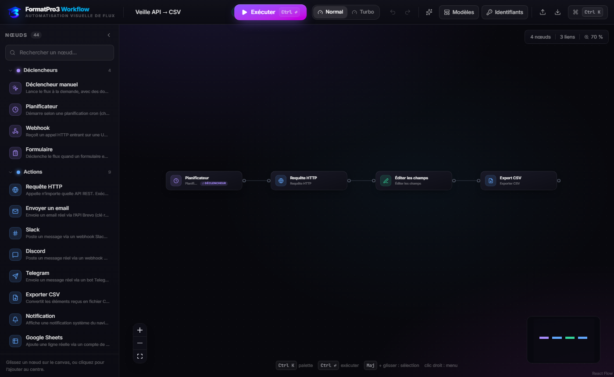

FormatPro3 Workflow est un éditeur de workflows par nœuds, dans l'esprit de n8n : vous posez des briques sur un canvas infini, vous les reliez, vous configurez chaque étape dans le panneau de droite, vous lancez l'exécution, et vous voyez les données circuler de nœud en nœud. Les arêtes s'illuminent, les nœuds affichent un anneau pendant le traitement puis une coche verte ou une secousse d'erreur, et le journal détaille les entrées, sorties et durées de chaque étape.
Chaque nœud effectue une action réelle ou échoue honnêtement. Il n'existe aucun simulateur, aucune réponse inventée, aucun « mode démo » caché. Un nœud Envoyer un email appelle l'API Brevo et le mail part. Un nœud YouTube téléverse le MP4 sur Google. Sans identifiant, l'exécution s'arrête sur le nœud concerné avec l'explication exacte — y compris l'URL où créer la clé et les scopes requis.
| Niveau | Ce qu'il apporte | Prérequis |
|---|---|---|
| Navigateur seul | Édition, exécution, 30+ nœuds 100 % locaux (HTTP, Code JS, conditions, données, IA extractive, CSV, notifications, Discord, Telegram, Notion, Brevo). | Aucun. La démo GitHub Pages suffit. |
| + relais local | Débloque Slack, Google Sheets (compte de service), toutes les API qui refusent le CORS, et la publication vidéo sur les 7 réseaux. | npm start dans la racine du projet. |
| + vos clés API | Envois réels, publications réelles, pages Notion, lignes de classeur. | Panneau Identifiants ({{ $creds.nom }}). |
Automatisation métier sans serveur : veille et reporting, triage de leads, enrichissement de données, notifications d'équipe, publication multi-réseaux. Tout reste sur votre machine — aucun compte FormatPro3 Workflow, aucun cloud, aucune télémétrie.
git clone https://github.com/ck526438-lgtm/formatpro3-workflow.git cd formatpro3-workflow npm install npm run dev # développement — http://127.0.0.1:5173 (rechargement à chaud) npm run build # production — génère dist/ npm start # relais local + sert dist/ sur http://127.0.0.1:5174
Node.js 18 ou plus récent est requis (npm run dev utilise Vite 8). npm start est optionnel : sans lui l'application tourne à 100 % dans le navigateur, à l'exception des appels bloqués par le CORS (voir chapitre 8).
npm run dev, Vite écoute sur 5173 et proxyfie automatiquement /api/* vers 5174. Lancez donc npm run dev dans un terminal et node server.mjs dans un second : l'application détecte seule la présence du relais (appel /api/health).http://127.0.0.1:5173http://127.0.0.1:5174 après npm run build puis npm starthttps://ck526438-lgtm.github.io/formatpro3-workflow/ — redéployée à chaque poussée sur mainBouton Modèles dans la barre d'outils → choisissez un modèle → Charger. Le canvas se remplit avec un flux complet et paramétré. Sinon Ctrl K → « Importer un flux » pour charger un JSON exporté.
| Zone | Rôle |
|---|---|
| Barre d'outils (haut) | Nom du flux, Exécuter / Arrêter, vitesse Normal / Turbo, Modèles, Identifiants, annuler / rétablir, import / export JSON, sauvegarde locale, indicateur « Enregistré ». |
| Palette latérale (gauche) | Les 44 nœuds groupés par famille, avec recherche. Ajout par glisser-déposer sur le canvas ou simple clic. |
| Canvas (centre) | Zoom molette, panoramique glisser, minimap colorée par famille, alignement automatique (dagre), pastille de zoom, compteurs nœuds / liens, attribution React Flow. |
| Nœuds | Icône, titre, couleur de famille, badge du nombre d'éléments traités, poignées d'entrée/sortie, anneau d'exécution, coche verte, secousse d'erreur. |
| Connexions | Particules animées pendant l'exécution, bouton + au milieu pour insérer un nœud, bouton × pour supprimer le lien. |
| Panneau de configuration (droite) | Formulaire généré depuis le schéma du nœud : texte, nombre, liste, booléen, paires clé/valeur, JSON, éditeur de code. Onglet d'inspection des entrées / sorties. |
| Journal d'exécution | Nœud par nœud : statut, durée, nombre d'éléments, détails entrée/sortie en JSON colorisé. |
| Menu contextuel (clic droit) | Sur un nœud : paramètres, exécuter jusqu'ici, dupliquer, copier, désactiver, supprimer. Sur une connexion : insérer un nœud, supprimer. Sur le canvas : ajouter nœud ou note, coller, tout sélectionner, organiser. |
| Notes autocollantes | Post-it redimensionnables, 4 couleurs, rendus derrière les nœuds, aucun impact sur l'exécution. |
Une connexion ne transporte pas un objet : elle transporte une liste d'éléments (tableau de JSON). Chaque nœud reçoit cette liste et en produit une nouvelle. C'est ce qui permet à un Éclater de transformer une commande en dix éléments, ou à un Agréger de les recompter en un seul.
{{ … }}Partout dans les champs de paramétrage, une expression entre accolades est évaluée par élément, juste avant l'exécution du nœud. C'est du JavaScript strict.
| Variable | Contenu |
|---|---|
{{ $json.champ }} | Le champ de l'élément en cours. {{ $json.a?.b ?? "—" }} fonctionne. |
{{ $items.length }} | Tableau complet des éléments reçus + index courant. |
{{ $index }} | Position de l'élément dans la liste (0, 1, 2…). |
{{ $node["Mon nœud"].json.total }} | Sortie d'un autre nœud, désigné par son libellé. Également .items, .all(), .first(). |
{{ $now.toISOString() }} | Date du début de l'exécution (objet Date : toLocaleDateString("fr-FR"), getTime()…). |
{{ $creds.maCle }} | Valeur enregistrée dans le panneau Identifiants. Rien n'est ressaisi. |
{{ … }}, le résultat garde son type naturel (nombre, booléen, objet, tableau). Si l'expression est noyée dans du texte, elle est convertie en chaîne — et un objet est sérialisé en JSON.Un nœud peut avoir plusieurs sorties numérotées : Condition a Vrai / Faux, Aiguillage a jusqu'à trois cas. Une branche non empruntée ne s'exécute pas : ses nœuds apparaissent comme ignorés au journal, et le flux continue sans erreur.
Ctrl ↵) : parcours en ordre topologique complet.localStorage du navigateur (indicateur « Enregistré ») ; Ctrl S force l'écriture.Ctrl Z / Ctrl ⇧ Z, sur la structure du graphe.Ctrl C / Ctrl V / Ctrl D.Familles : Déclencheurs Actions Vidéo Logique Données Intelligence Annotations
manualTriggerLance le flux à la demande avec des données d'exemple. Point d'entrée le plus simple pour concevoir et tester.
| Paramètre | Type | Description |
|---|---|---|
| Données d'exemple | JSON | Le ou les éléments injectés dans le flux. Un objet simple devient un élément ; un tableau en devient plusieurs. |
scheduleTriggerDémarre selon une planification. La fréquence est affichée et l'expression cron est conservée dans le flux pour un déclenchement côté serveur.
| Paramètre | Type | Description |
|---|---|---|
| Fréquence | liste | Chaque minute, chaque heure, chaque jour, chaque semaine. |
| Expression cron | texte | 0 9 * * 1-5 = 9 h du lundi au vendredi. * * * * * = chaque minute. |
webhookTriggerReçoit un appel HTTP entrant sur un chemin dédié, avec une charge utile d'exemple pour tester le flux sans serveur externe.
| Paramètre | Type | Description |
|---|---|---|
| Chemin | texte | Suffixe d'URL du webhook, ex. nouvel-achat. |
| Méthode | liste | GET, POST, PUT, PATCH, DELETE. |
| Charge utile d'exemple | JSON | Corps simulé lors d'une exécution manuelle du flux. |
formTriggerDéclenche le flux sur soumission d'un formulaire défini dans le nœud (champs clés/valeurs). Utile pour les collectes de leads et les demandes internes.
| Paramètre | Type | Description |
|---|---|---|
| Nom du formulaire | texte | Titre affiché. |
| Champs | clés/valeurs | Nom du champ + valeur d'exemple ou expression. |
httpRequestAppelle n'importe quelle API REST. Exécution réelle : la réponse JSON devient les éléments suivants. Si une API refuse le navigateur (CORS), le nœud bascule automatiquement par le relais local quand il tourne.
| Paramètre | Type | Description |
|---|---|---|
| Méthode | liste | GET, POST, PUT, PATCH, DELETE. |
| URL | texte | Expressions acceptées : …/users/{{ $json.userId }}. |
| En-têtes | clés/valeurs | Ex. Authorization → Bearer {{ $creds.tokenApi }}. |
| Corps (JSON) | JSON | Envoyé pour POST / PUT / PATCH. |
emailSend — BrevoEnvoi réel via l'API SMTP de Brevo (api.brevo.com/v3/smtp/email). Aucun envoi simulé : sans clé valide, le nœud échoue avec le message de Brevo.
| Paramètre | Type | Description |
|---|---|---|
| Clé API Brevo | texte | app.brevo.com → SMTP & API → Clés API (format xkeysib-…). Préférer {{ $creds.brevo }}. |
| Expéditeur | texte | Doit être une adresse validée dans Brevo, sinon refus de l'API. |
| Destinataire / Sujet / Message | texte | Expressions possibles partout. |
slackMessagePoste un message via un webhook d'entrée Slack. Passe par le relais local (l'API Slack n'autorise pas les appels navigateur).
| Paramètre | Type | Description |
|---|---|---|
| URL de webhook | texte | api.slack.com/messaging/webhooks → https://hooks.slack.com/services/… |
| Message | texte | Émojis et mises en forme Slack acceptés. |
discordMessagePoste un message réel via un webhook Discord — fonctionne directement depuis le navigateur.
| Paramètre | Type | Description |
|---|---|---|
| URL de webhook | texte | Serveur → Paramètres → Intégrations → Webhooks → Copier l'URL. |
| Message | texte | Contenu du message. |
telegramMessageEnvoie un message réel via l'API Bot Telegram (api.telegram.org/bot<token>/sendMessage).
| Paramètre | Type | Description |
|---|---|---|
| Jeton du bot | texte | Créé avec @BotFather (/newbot). |
| ID de conversation | texte | chat_id — écrivez au bot puis consultez …/getUpdates pour le récupérer. |
| Message | texte | Contenu envoyé. |
csvExportConvertit les éléments reçus en CSV et télécharge le fichier dans le navigateur. Fonctionnement local, aucune donnée envoyée.
| Paramètre | Type | Description |
|---|---|---|
| Nom du fichier | texte | Ex. veille-api.csv. |
| Séparateur | liste | ; (Excel français) ou , (standard). |
notificationAffiche une notification système du navigateur. Demande l'autorisation du site au premier déclenchement.
| Paramètre | Type | Description |
|---|---|---|
| Titre / Message | texte | Expressions possibles. |
sheetsAppendAjoute une ligne réelle dans un classeur via un compte de service Google. Signature JWT effectuée par le relais local (jamais dans le navigateur).
| Paramètre | Type | Description |
|---|---|---|
| Email du compte de service | texte | Champ client_email du JSON de clé. |
| Clé privée | texte | Champ private_key (avec les \n conservés). |
| ID du classeur | texte | La longue partie de docs.google.com/spreadsheets/d/<ID>. |
| Feuille et plage | texte | Feuille 1!A1. |
| Valeurs de la ligne | clés/valeurs | Une paire par colonne. |
notionCreateCrée une page réelle dans une base Notion via l'API officielle (api.notion.com/v1/pages).
| Paramètre | Type | Description |
|---|---|---|
| Jeton d'intégration | texte | notion.so/my-integrations → nouvelle intégration → cochez la base dans « Operated databases ». |
| ID de la base | texte | Identifiant après / dans l'URL de la base. |
| Propriété titre | texte | Nom exact de la propriété « Titre » (par défaut Name). |
| Titre / Contenu | texte | Valeurs de la page créée. |
Tous partagent le paramètre URL de la vidéo ({{ $json.video }} par défaut) : un lien direct vers le fichier (mp4, mov, webm), joignable sans login. Le chapitre 7 détaille les contraintes de chaque réseau.
videoYoutubeTélécharge la vidéo via le relais et la téléverse réellement sur YouTube (upload/youtube/v3/videos, upload multipart).
| Paramètre | Type | Description |
|---|---|---|
| Jeton d'accès OAuth | texte | ya29.…, scope youtube.upload. Comptes de service non pris en charge par YouTube. |
| Titre / Description / Tags | texte | Tags séparés par des virgules. |
| Catégorie | liste | People & Blogs, Divertissement, Éducation, Science & Tech, Musique, Jeux vidéo. |
| Visibilité | liste | Privée (défaut), Non répertoriée, Publique. |
| Conçue pour les enfants | booléen | Obligation légale COPPA ; impacte les commentaires et les recommandations. |
videoMastodonPublie une vraie vidéo sur l'instance de votre choix : POST /api/v2/media puis publication du statut.
| Paramètre | Type | Description |
|---|---|---|
| Instance | texte | Domaine seul, sans https:// — ex. mastodon.social. |
| Jeton d'accès | texte | Préférences → Développement → « Générer un jeton », scopes write:media + write:statuses. |
| Message | texte | Le post. |
| Texte alternatif vidéo | texte | Description pour lecteurs d'écran (recommandé, accessible). |
| Visibilité | liste | Publique, Non listée, Abonnés, Direct. |
videoBlueskySession XRPC, téléversement du MP4 sur le PDS du compte puis création de l'enregistrement app.bsky.feed.post avec l'incorporation vidéo.
| Paramètre | Type | Description |
|---|---|---|
| Hébergeur (PDS) | texte | bsky.social par défaut, ou le domaine de votre PDS auto-hébergé. |
| Identifiant | texte | monpseudo.bsky.social ou le handle. |
| Mot de passe d'application | texte | Paramètres → Sécurité → Mots de passe d'application. Le mot de passe réel est refusé. |
| Message | texte | Le post. |
| Texte alternatif vidéo | texte | Optionnel, accessible. |
videoXProtocole v2 réel : initialize → envoi par tranches de 5 Mo → finalize → attente du transcodage → publication du post. Relais obligatoire (pas de CORS).
| Paramètre | Type | Description |
|---|---|---|
| User access token | texte | developer.x.com → projet → scopes media.write + tweet.write. |
| Post | texte | Texte publié avec la vidéo. |
videoInstagramCrée le conteneur REELS avec l'URL, attend que Meta récupère la vidéo (polling status_code) puis publie via media_publish.
| Paramètre | Type | Description |
|---|---|---|
| ID du compte Instagram | texte | Graph API Explorer → Instagram Business Account. |
| Jeton d'accès Meta | texte | Permissions instagram_content_publish + pages_read_engagement. |
| Légende | texte | Caption du Reel. |
| Partager aussi dans le fil | booléen | Ajoute le Reel au fil du profil. |
videoFacebookMet réellement la vidéo en ligne sur une Page (POST /{page}/videos avec file_url) : Meta la récupère à partir de l'URL.
| Paramètre | Type | Description |
|---|---|---|
| ID de la Page | texte | Page → À propos → Identifiant de la Page. |
| Jeton d'accès de la Page | texte | Permissions publish_video + pages_manage_metadata. |
| Titre / Description | texte | Informations de la vidéo. |
videoTiktokContent Posting API, mode PULL_FROM_URL : initialisation puis suivi du statut de publication. Relais obligatoire.
| Paramètre | Type | Description |
|---|---|---|
| Jeton d'accès | texte | developers.tiktok.com → scope video.publish. |
| Titre / description | texte | TikTok affiche ce texte sous la vidéo. |
| Visibilité | liste | Moi uniquement (défaut), Abonnés croisés, Mes abonnés, Public — « Public » exige une app auditée. |
| URL de la miniature | texte | Optionnel, image publique. |
| Commentaires / Duettes / Stitch | booléen | Active ou coupe les interactions. |
if — sorties Vrai / Faux| Paramètre | Type | Description |
|---|---|---|
| Valeur 1 / Valeur 2 | texte | Expressions acceptées ({{ $json.montant }}). |
| Opérateur | liste | égal à, différent de, supérieur à, inférieur à, contient, ne contient pas, commence par, se termine par, existe, est vide. |
switch — jusqu'à 3 branches| Paramètre | Type | Description |
|---|---|---|
| Valeur testée | texte | Comparée à chaque cas. |
| Cas 1, Cas 2 | texte | Le dernier port sert de repli : les éléments sans correspondance y vont. |
merge — 2 entrées| Paramètre | Type | Description |
|---|---|---|
| Mode | liste | Concaténer (mise à la suite) ou Fusionner par index (champs combinés élément par élément). |
wait| Paramètre | Type | Description |
|---|---|---|
| Durée (secondes) | nombre | Suspend l'exécution ; utile pour ménager un quota d'API. |
filter · Limiter limit| Paramètre | Type | Description |
|---|---|---|
| Filtrer — conditions | clés/valeurs | Ne conserve que les éléments qui passent la condition (mêmes opérateurs que Condition). |
| Limiter — maximum | nombre | Tronque la liste d'éléments. |
set| Paramètre | Type | Description |
|---|---|---|
| Champs | clés/valeurs | Ajoute ou remplace des champs, expressions incluses. |
| Conserver uniquement ces champs | booléen | Vrai = ne garde que les champs listés (nettoyage avant CSV). |
codeTransforme les données avec du JavaScript exécuté réellement dans le navigateur. Variable items disponible, retournez un tableau.
return items.map((item) => ({
...item,
segment: item.montant > 1000 ? "VIP" : "standard",
traiteLe: new Date().toISOString(),
}));
new Function, sans bac à sable : n'exécutez que du code que vous comprenez, et n'importez pas un flux JSON venu d'ailleurs sans l'avoir relu.| Nœud | Type | Paramètres et usage |
|---|---|---|
Éclater splitOut | Données | Champ tableau — transforme un tableau en un élément par entrée (ex. commandes → N éléments). |
Agréger aggregate | Données | Opération : Compter, Collecter, Somme d'un champ (+ Champ pour la somme). |
Date & Heure dateTime | Données | Opération : Maintenant / Décaler ; Quantité, Unité (minutes, heures, jours), Champ de sortie (défaut date). |
Crypto crypto | Données | Champ source, Algorithme : SHA-256, SHA-1, SHA-384, SHA-512, Base64, Hexadécimal, Champ de sortie. Local, aucun envoi. |
Parser JSON jsonParse | Données | Champ à parser — convertit une chaîne JSON en objet exploitable par les expressions. |
Dédoublonner removeDuplicates | Données | Champ de comparaison (vide = élément entier). |
Trier sort | Données | Champ, Ordre : décroissant / croissant. |
Pause neutre noOp | Données | Aucun paramètre — laisse passer les éléments. Sert de carrefour ou de repère d'inspection. |
Cinq nœuds (Résumer, Sentiment, Classifier, Extraire des données, Traduire) fonctionnent hors ligne, sans clé, par analyse locale : rien ne quitte votre navigateur. Résumer et Chat IA proposent un moteur OpenAI compatible — dans ce cas uniquement, une clé est demandée.
| Nœud | Paramètres |
|---|---|
Résumer aiSummarize | Moteur (Local extractif / OpenAI compatible), Texte à résumer, Clé API et Modèle (gpt-4o-mini) si moteur OpenAI. Sorties resume et motsCles. |
Sentiment aiSentiment | Texte analysé. Sortie positive / négative / neutre. |
Classifier aiClassify | Texte analysé, Catégories (paires clé = nom, valeur = mots-clés). Sortie categorie, idéale pour alimenter un Aiguillage. |
Chat IA aiChat | Moteur, Consigne, Clé API, Modèle, URL de base (https://api.openai.com/v1, remplaçable par toute API compatible), Champ de sortie. |
Agent IA aiAgent | Objectif de l'agent, Champ de sortie — analyse l'entrée et propose un plan d'action. |
Extraire des données aiExtract | Texte source, Champs à extraire (paires) — structuré un texte non structuré (email, montant, date…). |
Traduire aiTranslate | Texte, Langue cible : Anglais, Français, Espagnol (dictionnaire local). |
Note stickyNote : post-it redimensionnable, Contenu libre et Couleur (jaune, violet, bleu, vert). Rendu derrière les nœuds, jamais exécuté — documentez les zones du canvas.
Bouton Identifiants dans la barre d'outils : enregistrez une clé une seule fois sous un nom court, puis référencez-la partout avec {{ $creds.nom }}. Stockage exclusivement local (localStorage du navigateur) — aucune transmission à un serveur FormatPro3 Workflow, qui n'existe pas.
// dans un nœud Requête HTTP
En-tête Authorization → Bearer {{ $creds.tokenApi }}
// dans un nœud Envoyer un email
Clé API Brevo → {{ $creds.brevo }}
| Service | Où l'obtenir | Prérequis côté service | Passage par le relais |
|---|---|---|---|
| Brevo (email) | app.brevo.com → SMTP & API → Clés API | Expéditeur validé dans Brevo | Non (navigateur) |
| Discord | Serveur → Intégrations → Webhooks | Webhook du salon cible | Non |
| Telegram | @BotFather → /newbot | chat_id de la conversation | Non |
| Notion | notion.so/my-integrations | Intégration connectée à la base, propriété titre exacte | Non |
| Slack | api.slack.com/messaging/webhooks | Webhook d'entrée | Oui (CORS) |
| Google Sheets | console.cloud.google.com → compte de service | Classeur partagé avec l'email du compte | Oui (signature JWT) |
| Requête HTTP | — | Selon l'API | Repli automatique si CORS |
| YouTube | OAuth Playground / Google Cloud | Scope youtube.upload, compte Google normal | Oui (octets) |
| Mastodon | Préférences → Développement | write:media + write:statuses | Octets oui ; API joignable depuis le navigateur |
| Bluesky | Paramètres → Sécurité → Mots de passe d'application | MP4 uniquement, quota du PDS | Octets oui |
| X (Twitter) | developer.x.com | media.write + tweet.write | Oui (CORS) |
| Instagram Reels | developers.facebook.com (Graph API) | Compte professionnel + app approuvée | Non (URL remise à Meta) |
| Facebook Page | developers.facebook.com | Page + jeton Page, publish_video | Non (URL) |
| TikTok | developers.tiktok.com | App auditée pour « Public », domaine vérifié pour PULL_FROM_URL | Oui (CORS) |
npm start). Il récupère les octets de la vidéo et les transmet à la plateforme — sans lui, le nœud s'arrête avec ce message, avant même de vérifier les clés.Avant le moindre octet téléchargé, chaque nœud vidéo vérifie que toutes ses informations d'identification sont remplies et échoue immédiatement avec la phrase exacte — où créer la clé et quels scopes cocher. Résultat mesuré : une exécution mal configurée échoue en ~23 ms au lieu de ~1 s, sans téléverser une vidéo de 100 Mo pour rien. Vous ne payerez jamais un téléchargement pour découvrir ensuite un jeton manquant.
| Mode | Réseaux | Détail |
|---|---|---|
| URL remise à la plateforme | Instagram, Facebook, TikTok | FormatPro3 Workflow transmet l'URL ; ce sont les serveurs du réseau qui viennent chercher le fichier. L'URL doit donc être en HTTPS, publique, sans redirection ni protection par cookie. Instagram affiche même un conteneur créé avec succès avant d'échouer au polling : FormatPro3 Workflow attend et signale l'échec réel. |
| Octets envoyés par FormatPro3 Workflow | YouTube, Mastodon, Bluesky, X | Le relais lit la vidéo et la découpe selon le protocole du réseau (multipart YouTube, tranches de 5 Mo pour X, blob brut pour Bluesky). Taille totale plafonnée à 200 Mo côté relais. |
| Réseau | Contraintes réelles (vérifiées sur l'API officielle) |
|---|---|
| YouTube | Un quota d'environ 100 téléversements par jour ; compte Google normal obligatoire (les comptes de service ne peuvent pas téléverser) ; le jeton se passe en en-tête Authorization: Bearer. |
| Mastodon | Formats MP4 / MOV / WebM ; la limite de poids dépend de votre instance (FormatPro3 Workflow lit video_size_limit via /api/v2/instance et la respecte) ; un seul média vidéo par post ; environ 30 téléversements par 30 minutes. |
| Bluesky | MP4 uniquement — un autre format est rejeté à la publication et FormatPro3 Workflow vous dit de réencoder en H.264/AAC. Limite d'envoi fixée par le PDS : ~5 Mo sur un serveur auto-hébergé par défaut, davantage sur les hébergeurs officiels. Voie simple retenue : le fichier est stocké tel quel, sans transcodage par le service vidéo de Bluesky — la publication est réelle, mais moins optimisée que depuis l'application mobile. |
| X | Tranches de 5 Mo, puis transcodage asynchrone : FormatPro3 Workflow attend l'état succeeded avant de publier, et signale un failed (format ou durée non supportés). |
| Compte professionnel lié à une Page, app Meta approuvée, minimum 15 minutes entre deux Reels (code 382), HTTPS sans redirection. | |
Jeton de Page (pas personnel), permission publish_video ; l'URL est passée en file_url. | |
| TikTok | App non auditée : SELF_ONLY obligatoire et maximum ~5 publications par utilisateur sur 24 h ; en mode URL, votre domaine doit être vérifié dans le portail développeur, sinon video_pull_failed. |
server.mjs — zéro dépendance, écoute uniquement sur 127.0.0.1:5174. Il ne stocke rien sur disque et ne parle qu'aux API que votre flux appelle.
| Route | Rôle |
|---|---|
/api/health | Signale la présence et la version du relais ; l'app l'appelle une seule fois et adapte l'interface. |
/api/relay | Transfert HTTP générique (méthode, en-têtes, corps) vers une API qui refuse le navigateur. |
/api/sheets-append | Signature du JWT de compte de service et appel à l'API Google Sheets. |
/api/video/fetch | Télécharge la vidéo depuis son URL et la retient en mémoire (clé temporaire). |
/api/video/multipart · /chunk · /related | Envoie des tranches du fichier selon le protocole de la plateforme (segments, plages, corps structuré). |
/api/video/release | Libère la vidéo dès que la publication est terminée. |
npm start.| Modèle | Ce qu'il fait réellement | Briques |
|---|---|---|
| Veille API → CSV | Planificateur → API publique (JSONPlaceholder) → nettoyage des champs → fichier CSV téléchargeable. | API réelle, Fichier CSV |
| Triage de leads par IA | Formulaire → classification IA → aiguillage 3 branches : email support, email commercial (Brevo) ou archive CSV. | Branchements, clé Brevo requise |
| Résumé IA → Notification | Texte d'exemple → résumé local (mots-clés inclus) → notification système du navigateur. | IA, Sans clé |
| Webhook → Enrichissement → Discord | Réception d'un évènement, appel API pour le profil, enrichissement en Code JS, empreinte SHA-256 de l'email, post Discord. | API réelle, Crypto |
| Traitement de commandes | Éclatement d'une liste, condition sur le montant, alerte email d'un côté, tri + limite + CSV de l'autre. | Logique, Agrégation |
| Publication vidéo multi-réseaux | Normalise une vidéo par URL puis publie sur Mastodon, Bluesky et X. | Relais requis, Publication réelle |
Charger un modèle ne remplace pas vos jetons : ouvrez chaque nœud et renseignez-les, ou utilisez {{ $creds.* }}.
| Raccourci | Action | Raccourci | Action |
|---|---|---|---|
| Ctrl K | Palette de commandes | Ctrl ↵ | Exécuter le flux |
| Ctrl Z | Annuler | Ctrl ⇧ Z | Rétablir |
| Ctrl C / V | Copier / coller | Ctrl D | Dupliquer |
| Ctrl A | Tout sélectionner | Ctrl S | Sauvegarde locale immédiate |
| D | Activer / désactiver le nœud sélectionné | Suppr | Supprimer la sélection |
| Maj + glisser | Sélection multiple | Clic droit | Menu contextuel (nœud, connexion, canvas) |
| Message affiché | Cause réelle | Solution |
|---|---|---|
| « … est bloqué par le navigateur (CORS). Lancez le relais local » | Le relais n'est pas démarré. | npm start (ou node server.mjs) puis relancez le flux — vérifiez http://127.0.0.1:5174/api/health. |
| « Jeton d'accès … manquant — … scopes … » | Champ vide ou non résolu. | Renseignez le champ, ou {{ $creds.nom }} après l'avoir enregistré dans Identifiants. |
| « URL de vidéo invalide » / « L'URL ne renvoie pas une vidéo mais du text/html » | Lien page de lecture, ou lien raccourci / protégé. | Utilisez le lien direct du fichier (se termine par .mp4, ouvre la vidéo dans un onglet vierge). |
| « Bluesky n'accepte que du MP4 : reconnu comme … » | Le PDS a reniflé un autre format. | Réencodez en H.264 / AAC (MP4) puis relancez. |
| « … accepte X Mo par fichier » | Limite d'envoi du PDS ou de l'instance dépassée. | Réduisez le poids, ou changez d'hébergeur / demandez à l'admin d'augmenter la limite. |
| Instagram « status_code = ERROR » | Meta n'a pas pu récupérer la vidéo. | URL en HTTPS, sans redirection, publique, sans protection par cookie. |
TikTok video_pull_failed | Domaine non vérifié dans le portail développeur. | Ajoutez votre domaine dans Developer Portal → Products → Content Posting → Domain verification. |
| « Meta … [code 382] » | Deux Reels trop rapprochés. | Attendre 15 minutes, ou ajouter un nœud Attendre dans un flux récurrent. |
| « Meta … [code 190] » | Jeton expiré. | Régénérer le jeton (les jetons longue durée nécessitent une app approuvée). |
| « X a rejeté le traitement de la vidéo » | Format, durée ou résolution non supportés. | Réencoder en MP4 H.264/AAC, durée raisonnable, puis relancer. |
| Brevo refuse l'envoi | Expéditeur non validé dans Brevo. | Vérifiez l'adresse (domaine ou email) dans Brevo → Expéditeurs. |
| Google Sheets « permission denied » | Classeur non partagé avec le compte de service. | Partager le classeur en éditeur avec client_email. |
| Notion ne crée pas la page | Base non connectée à l'intégration ou propriété titre différente. | Cochez la base dans l'intégration ; alignez Propriété titre sur le nom réel. |
| « Délai dépassé … (30 s) » | Réseau lent ou API distante saturée. | Relancer ; pour une vidéo lourde, vérifiez d'abord le relais (jusqu'à 300 s côté envoi). |
| Un nœud reste gris / « ignoré » | Sa branche n'a pas été empruntée (Condition ou Aiguillage). | Comportement normal : vérifiez la valeur testée dans le journal. |
| Boucle détectée à l'exécution | Connexion qui revient en arrière dans le graphe. | Coupez le lien retour ; pour un vrai cycle, passez par Fusionner. |
| Le flux disparaît après un nettoyage du navigateur | localStorage effacé. | Export JSON régulier ; versionnez vos flux dans Git. |
localStorage du navigateur. Aucun serveur FormatPro3 Workflow, aucun compte, aucune télémétrie.{{ $creds.* }} et gardez les clés hors du fichier, ou nettoyez-les avant publication.server.mjs # Relais local optionnel + sert dist/
src/
├── types.ts # Types partagés (nœud, élément, exécution, familles)
├── data/
│ ├── catalog.tsx # 44 définitions de nœuds : icône, couleur, paramètres, ports
│ └── templates.ts # 6 flux prêts à l'emploi
├── engine/
│ ├── expressions.ts # {{ $json }} {{ $items }} {{ $node }} {{ $now }} {{ $creds }}
│ ├── engine.ts # Ordre topologique, branchements, exécuteurs de nœuds
│ ├── relay.ts # Client du relais : /api/relay, /api/video/*
│ └── video.ts # 7 publications réseau réelles + contrôle préalable
├── store/store.ts # zustand : graphe, historique, exécution, toasts, identifiants
└── components/ # Canvas, FlowNode, FlowEdge, StickyNote, ConfigPanel,
# ExecutionPanel, CommandPalette, CredentialsModal,
# TemplatesModal, ContextMenu, TopBar, JsonView, Toasts
src/data/catalog.tsx : type, libellé, famille, icône, description, nombre d'entrées, libellés de sorties, liste des paramètres.case dans l'exécuteur de nœud (src/engine/engine.ts) — ou une fonction dédiée si le nœud appelle un réseau, comme dans video.ts.React 19 · TypeScript 5 strict · Vite 8 (rolldown) · @xyflow/react 12 (React Flow, MIT, attribution conservée) · zustand 5 · motion 12 · Tailwind CSS 4 · dagre · lucide-react. Nœuds et connexions mémoïsés, compilation des expressions mise en cache, build découpé en 4 chunks (React, React Flow, motion, application).
dist/ sur main.github.com/ck526438-lgtm/formatpro3-workflow — issues et contributions ouvertes.